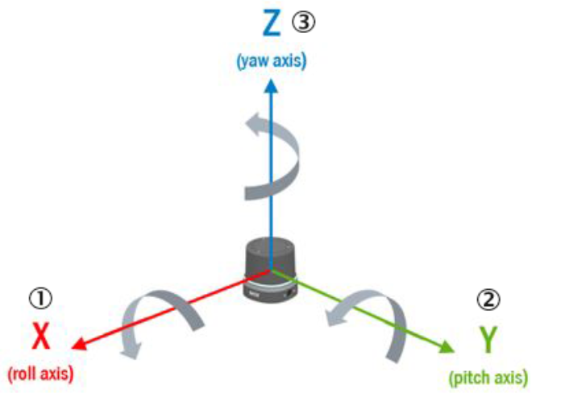
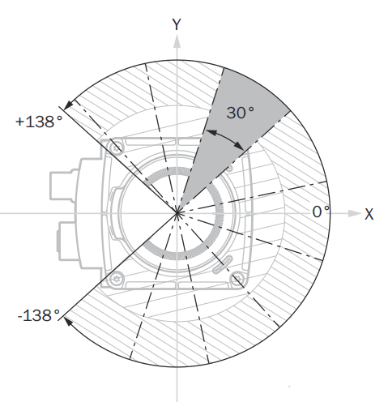
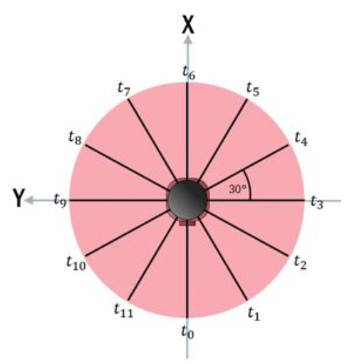
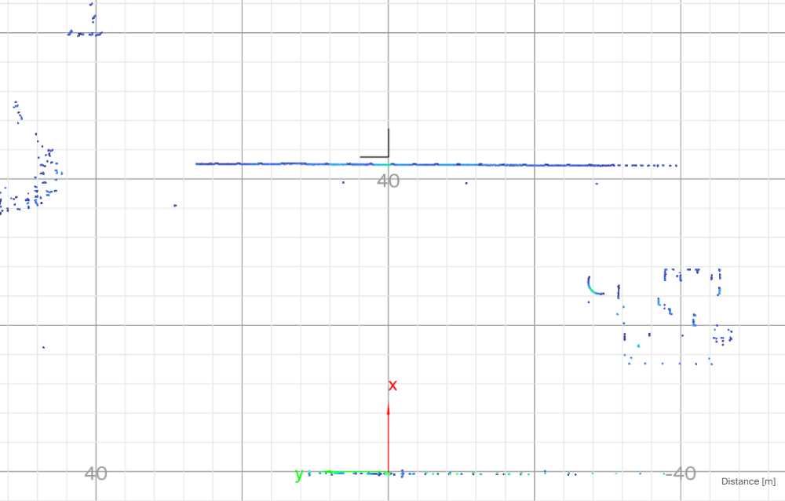
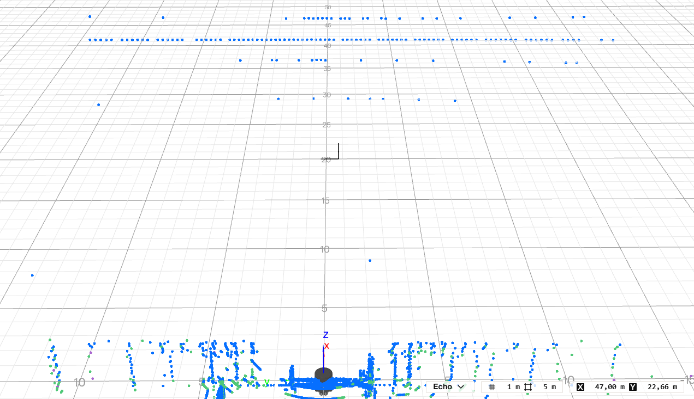
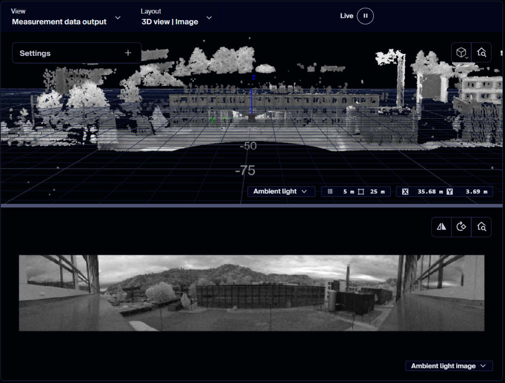
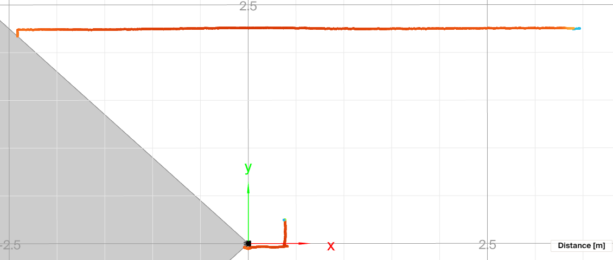

Compact Format¶
The Compact format is SICK's binary format for measurement data. It uses the least bandwidth of all formats and can be parsed very efficiently, for example by copying the bytes into a C struct with memcpy. The fields are not self-describing: your parser must know the layout, which SICK publishes as Kaitai Struct definitions.
The authoritative definitions are in the formats folder on GitHub. Paste a captured telegram into the browser-based Kaitai Web IDE to inspect it field by field, or generate a parser for your application.
To receive Compact data without writing your own parser, use the C++ sick_perception_sdk. It receives the scan, IMU, and encoder data and provides the scans as point clouds.
Frames and Segments¶
The multiScan100 and picoScan100 send each scan segment in a UDP datagram.
The LRS4000 and multiScan200 carry it as a framed telegram in the TCP stream.
Every segment can be processed on its own, which keeps latency low. To work
with a full scan (frame), collect all segments with the same frame_number.
The Compact format is organized as one frame definition that dispatches to the individual telegram types. Types 3, 4, 6, and 7 also share the standard header:
---
config:
flowchart:
nodeSpacing: 8
rankSpacing: 30
padding: 4
---
flowchart LR
CF["Compact<br/>frame"]
T1["Type 1: Scan data"]
T2["Type 2: IMU"]
T3["Type 3: Ambient light"]
T4["Type 4: Encoder"]
T6["Type 6: Scan data (multiScan200)"]
T7["Type 7: IMU"]
CH["Standard<br/>header"]
CF --> T1
CF --> T2
CF --> T3
CF --> T4
CF --> T6
CF --> T7
T3 --> CH
T4 --> CH
T6 --> CH
T7 --> CHCompact parser structure: the frame definition selects the telegram-specific parser. Types 3, 4, 6, and 7 reuse the standard header definition.
Transport¶
The multiScan100 and picoScan100 send Compact data over UDP; the LRS4000 and multiScan200 send it over TCP. For a comparison of UDP unicast, UDP multicast, and TCP, see UDP Unicast / Multicast.
Select Compact with the ScanDataFormat REST parameter or in the data-output
settings. Connect a TCP client to port 2115. LMDscandata
is available as an alternative TCP format.
Select Compact or MSGPACK in the data-output settings and set the destination IP address and port. UDP multicast supports Compact only. The REST API exposes the same Ethernet destination settings.
Select TCP Compact as data output mode (sWN dataOutputMode 1); see the
multiScan200 CoLa Telegram Listing.
The sensor uses a separate TCP port per content:
Transport: multiScan200 TCP port, content, and telegram type.
| TCP port | Content | Telegram type |
|---|---|---|
2115 |
Distance and RSSI, optionally with ambient light | 6 |
2116 |
Ambient light only | 3 |
2117 |
IMU | 7 |
Select Compact or MSGPACK in the data-output settings and set the
destination IP address and port. The factory default destination is
192.168.0.100:2115. The REST API exposes the same Ethernet destination
settings.
picoScan100 example: Enable Compact measurement data over UDP unicast and set the receiver destination address.
For UDP multicast, set the destination to an address from 224.0.0.0 to
239.255.255.255. The network requirements are on
UDP Unicast / Multicast.
Wireshark Dissector¶
SICK provides a Wireshark dissector for Compact measurement and IMU data, so you can inspect the stream field by field instead of reading raw bytes. It supports the Compact format only. Use it to confirm framing, ports, CRCs, and decoded values before you debug your own parser.
Install the Dissector¶
- Download and install Wireshark.
- Download the dissector: COMPACT_Dissector.lua.
- In Wireshark, open Help > About Wireshark > Folders and copy the file to the Personal Lua Plugins folder.
- Restart Wireshark.
Decode Compact Data¶
- Configure the sensor to output Compact data. For multiScan100 and picoScan100, select UDP and set the destination to your PC's IP address and listening port. For LRS4000 and multiScan200, use the TCP connection.
- Open Wireshark and double-click the Ethernet interface connected to the sensor to start capturing.
- Enter
compactin the display-filter bar and press Enter. Decoded packets showCOMPACTin the Protocol column. - Select a packet and expand the Compact tree in the packet-details pane. Inspect the telegram type, header, and measurement values, such as distance. For an IMU telegram, inspect acceleration and angular velocity instead.
On Windows, the sensor adapter must use the Private network profile; see Getting Started.
If no Compact packets appear, clear the display filter first to check whether traffic arrives at all. Verify the sensor's output format, destination address, and port. If you use a non-default port, add it to the corresponding port list near the top of the Lua file, such as CompactPorts or IMUPorts, and restart Wireshark.
To disable the plug-in temporarily, choose Analyze > Enabled Protocols and clear its checkbox. See Frame Layout for the telegram structure and Wireshark | pcap for recording traffic.
IMU Example¶
Enable IMU output on a supported sensor and capture its IMU stream as well as the measurement stream. The video shows how to receive and inspect IMU telegrams in Wireshark.
How to receive IMU data and dissect it with Wireshark.
Frame Layout¶
All multi-byte values are little-endian. The frame contains a start marker, a
telegram type, the type-specific payload, and a CRC32 checksum. Verify the
checksum before processing the payload. Use the authoritative
compact_frame.ksy definition on GitHub
for the complete frame layout.
Standard Header¶
Telegram types 3, 4, 6, and 7 start their payload with the same header. Types
1 and 2 do not. For the complete field layout, use the authoritative
compact_header.ksy definition on GitHub.
For type 4 with telegram_version 1, payload_length includes sender_id; from version 2 onwards it does not.
Type 1: Scan Data¶
The scan payload is a header followed by one or more modules. Each module carries per-layer metadata plus the beam data for its layers. Read the first module size from the telegram header, then use each module's next_module_size to find the next one; zero marks the last module. Do not assume all modules have the same size.
Read telegram_version, data_content_echos, and data_content_beams before parsing beam data. Versions 3 and 4 have different beam-field ordering; version 4 also adds a distance scaling factor to the module metadata. For version 4, convert a raw distance to millimeters as distance_mm = distance_raw × distance_scaling_factor. All segments of one scan share frame_number and differ by segment index. The authoritative definition is type_1_primary_data_spherical_coordinates.ksy on GitHub.
The following annotated dump shows the first bytes of a real type 1 telegram from the picoScan150 sample capture. All values are little-endian. Offsets are decimal.
Offset Bytes Field Value
0 02 02 02 02 start_of_frame
4 01 00 00 00 telegram_type 1 (scan data)
8 a1 47 00 00 00 00 00 00 telegram_counter 18337
16 24 07 d4 07 00 00 00 00 transmit_timestamp 131335972 µs
24 04 00 00 00 telegram_version 4
28 70 23 00 00 size_module_0 9072 bytes
32 02 00 00 00 00 00 00 00 segment_counter 2
40 53 0e 00 00 00 00 00 00 frame_number 3667
48 99 df 71 01 sender_id 24240025 (serial number)
52 01 00 00 00 58 02 00 00 lines, beams per scan 1 layer, 600 beams
60 03 00 00 00 number_of_echos_per_beam 3
64 56 d8 d3 07 00 00 00 00 timestamp_start 131323990 µs (16 bytes with timestamp_stop)
80 00 00 00 00 phi 0.0 rad
84 78 d9 a0 be 06 36 3b 3f theta_start, theta_stop -0.3142 rad (-18°), 0.7313 rad (41.9°)
92 00 00 80 3f distance_scaling_factor 1.0
96 00 00 00 00 next_module_size 0 (last module)
100 01 03 03 00 reserved, echo/beam flags distance + RSSI, azimuth + properties
104 6e 00 e5 e5 beam 1, echo 1 distance 110 mm, RSSI 58853
108 00 00 00 00 00 00 00 00 beam 1, echoes 2 and 3 no echo
116 00 9a 39 properties, theta 0, 14746 → -18.0°
119 ... beams 2 to 600 15 bytes each
9104 5c 7d ab ce CRC32 over bytes 0 to 9103
The beam azimuth converts to radians as (theta - 16384) / 5215.
phi is the beam elevation above the XY plane of the scan coordinate system,
and theta is the beam azimuth in that plane, measured from +X towards +Y.
They are not the IMU orientation angles roll, pitch, and yaw, and the
conversion below does not transform points into a world coordinate system.
To convert a beam to a 3D point, use phi (elevation), theta (azimuth), and the distance d:
Type 2: IMU¶
A flat, fixed-size payload from the integrated inertial measurement unit. It
has no standard Compact header and no optional fields. IMU output is available
on multiScan100 and picoScan100; sampling and available fields depend on the
product. The LRS4000 provides IMU data through CoLa events or
GET /api/InertialMeasurementUnit, not as a Compact telegram. The authoritative Compact layout is
type_2_imu.ksy on GitHub.
The data is specified in the following coordinate system based on the DIN 70000 system: The x-axis lies on the 90° beam of the 0° plane. The y-axis is perpendicular to the x-axis and lies in the 0° plane. The y-values increase in the counter rotation direction (right-handed system). The z-axis is perpendicular to the y-axis and the top of the device points towards increasing z-values.
Roll, pitch, and yaw are rotations about X, Y, and Z. They describe the sensor orientation, not the beam angles of the scan data.

IMU axes and roll, pitch, and yaw rotation directions based on DIN 70000; these are distinct from scan-beam angles.
Type 3: Ambient Light¶
The ambient-light image of the multiScan200 is sent as a separate telegram. The sensor captures it passively through the same receiver as the distance data. It follows the standard header.
Distance and ambient-light data measured at the same time share the same
frame_number. Use the authoritative
type_3_ambient_light.ksy definition on GitHub
for the complete payload layout.
Type 4: Encoder¶
Reports an external rotary encoder attached to a moving axis (picoScan150).
One encoder telegram is sent per scan frame and linked to it by frame_number.
It follows the standard header.
See 3D With 2D LiDARs for how to fuse encoder and scan data.
Use the authoritative type_4_encoder.ksy definition on GitHub for the complete payload layout.
Type 6: Scan Data (multiScan200)¶
The scan data of the multiScan200. One telegram carries one segment: a block of columns (slots), each with all layers. It follows the standard header.
Convert each pixel to a 3D point with the formula for type 1, using the elevation angle of its layer as phi and the azimuth angle of its column as theta. Use the authoritative type_6_primary_data_multiscan200.ksy definition on GitHub for the complete segment header and data-block layout.
For interlaced scan configurations, number_of_interlace_steps is greater than 1 and consecutive frames must be combined to cover the full field of view; current_interlace_index identifies each frame's position in that sequence. Configured data reduction can also leave zero-filled distance and RSSI values in the fixed-size Compact segment, including for angles outside the selected range. A zero value alone therefore does not mean that the beam or column is absent.
Type 7: IMU with Standard Header¶
The IMU data of the multiScan200. The content matches type 2, but the payload starts with the standard header and has no telegram_version field of its own:
Use the authoritative type_7_imu_standard_header.ksy definition on GitHub for the complete payload layout.
Measurement Data Conventions¶
Azimuth Angles¶
The theta values within a segment are monotonically
increasing. For a 360° sensor, a segment that crosses the +180°/−180° boundary
can therefore continue beyond 180° instead of wrapping immediately to a
negative value. In the example below, the blue segment runs from 160° to 189°,
while the following green segment uses −170° to −141°. Preserve this ordering
while parsing; normalize the angles only afterwards if your application needs
the range (−180°, 180°].

Azimuth values remain monotonically increasing within a segment.
Segment Counters¶
Normally, the segment counter is between 0 and
number_of_segments - 1 and increases with the azimuth. The multiScan100 has
one exception: when most beams in a segment lie beyond 180°, that segment
belongs to the next frame and receives counter 0. With 30° segments, an
angle-only calculation would produce counter 12, which wraps to 0. Use the
transmitted counter rather than deriving it from theta.

The blue segment belongs mainly to the next frame and therefore receives counter 0.
RSSI Values¶
Compact and MSGPACK represent RSSI as a dimensionless 16-bit
unsigned integer. Treat the full range from 0 to 65535 as valid, although a
device may never reach the maximum. RSSI is not standardized, so absolute
values are not directly comparable between device families.
Some device outputs scale an internally measured 8-bit RSSI value depending on the output format:
RSSI Values: format, bit depth, and conversion.
| Format | Bit depth | Conversion |
|---|---|---|
| Compact type 1 | 16-bit | 16bit = (8bit / 255) × 65535 |
| MSGPACK | 16-bit | 16bit = (8bit / 255) × 65535 |
LMDscandata (CoLa) |
8-bit | none; value 254 = reflector detected; this representation is compatible with TiM5/7 |
For example, an internal 8-bit value of 1 becomes 257 (0x0101) in
16-bit output. The low byte equals the high byte (for example 0xe6e6), which
is expected.
Bit Fields and Beam Properties¶
data_content_echos,
data_content_beams, and each beam's properties value are bit fields. Test
bit i with (value & (1 << i)) != 0; do not interpret the complete decimal
value as a single state. In properties, bit 0 means that a reflector was
detected for at least one echo of the beam. This can be treated as applying to
the last echo because a reflector echo is not physically followed by another
echo on the same beam. Bits 1 through 7 are reserved and must be ignored.
Segments (LRS4000)¶
LRS4000 sends one Compact scan telegram per frame. The DataOutputRange
setting replaces measurements outside the selected angles with zeros; it does
not reduce the telegram size.
Segments (picoScan100)¶
The picoScan100 scans a range of 276°. One 276° rotation of the scan layer is one scan (frame). For output, each scan is split into segments of a fixed angular size:
Segments (picoScan100): scanning frequency, segment size, and segments at 276°.
| Scanning frequency | Segment size | Segments at 276° |
|---|---|---|
| ≤ 25 Hz | 30° | 10 |
| ≥ 30 Hz | 60° | 5 |

Example of 30° scan segments within the 276° scan range.
Segment boundaries do not move when you reduce the scan range. Measured values in hidden angle ranges are filled with zeros, and a segment that is completely hidden is not sent. Example: 180° (−90° to +90°) at 40 Hz gives 4 segments.
Segments (multiScan100)¶
The multiScan100 captures a 360° frame across its scan layers and divides the output into time-based segments. Each segment contains data from all scan layers, but the azimuth ranges of those layers do not necessarily line up spatially. Raw output keeps the original layer timing. Rectified output aligns the layer start angles as closely as possible and adds at least one segment interval of latency. See the multiScan100 overview for device-specific output context.

A 360° frame split into twelve 30° segments, each with its own time stamp.
Each segment covers a different time within the rotation, so t0 to t11
increase in the scan direction. Use the per-segment time stamps rather than the
frame time when you fuse the data with motion or another sensor.
Sample Packet Captures¶
Open these one-second .pcap.gz recordings directly in Wireshark with the
Compact dissector. All recordings contain only measurement traffic,
with original packet bytes and timestamps.
In every sample, 192.168.0.1 is the sensor and 192.168.0.100 is the
receiver; your PC does not need matching addresses for offline inspection.
The tables describe recorded settings, not required defaults.
Enable IPv4 reassembly for UDP and TCP stream reassembly for TCP.
UDP scan frames can be partial at the recording boundaries; group segments
by frame_number. For TCP, use Follow TCP Stream: a telegram spans
multiple packets. Reference pictures show scene context, not synchronized
PCAP frames.
Compact sample availability and transport by device family.
| Device family | Sample | Compact transport |
|---|---|---|
| LRS4000 | LRS4000 scan capture (gzip PCAP, 605 KB) | TCP |
| multiScan100 | multiScan165 scan and IMU capture (gzip PCAP, 1.16 MB) | UDP unicast |
| multiScan200 | multiScan270 scan, ambient-light, and IMU capture (gzip PCAP, 13.4 MB) | TCP |
| picoScan100 | picoScan150 scan, IMU, and encoder capture (gzip PCAP, 327 KB) | UDP unicast |
LRS4000 Capture Settings¶

LRS4000 reference view: planar scan points on a grid, with distance in meters.
LRS4000 settings and recorded TCP scan data.
| Setting | Value in this recording |
|---|---|
| Device and firmware | LRS4581R-230001, firmware 1.10.0.0R |
| Scan connection | Sensor TCP port 2115 → receiver port 49455; Compact (ScanDataFormat = 2) |
| Scan telegrams | 13 complete type 1 telegrams, version 4; no partial telegrams |
More recorded settings
Additional recorded settings.
| Setting | Value in this recording |
|---|---|
| Duration | 0.994874 s |
| Scan configuration | 12.5 Hz, 0.04°; −180° to +180° |
| Scan geometry | One module, one layer, 9,000 beams, three echoes per frame |
| Filters | All echoes; particle, mean, median, and radial-distance filters disabled |
| Distance scale | ScanDataScaleFactor = 2 |
Wireshark filter: ip.addr == 192.168.0.1 && tcp.port == 2115.
multiScan165 Capture Settings¶

multiScan165 reference view: scan points on a perspective grid, colored by echo.
multiScan165 settings and recorded UDP scan and IMU data.
| Setting | Value in this recording |
|---|---|
| Device and firmware | multiScan165, firmware 2.5.0.0R |
| Scan connection | Sensor UDP port 39493 → receiver port 2115; Compact (ScanDataFormat = 2) |
| Scan telegrams | 242 type 1 telegrams, version 4; 20 complete 12-segment frames and one partial frame |
| IMU connection and telegrams | Sensor UDP port 58362 → receiver port 7503; 101 type 2 telegrams |
More recorded settings
Additional recorded settings.
| Setting | Value in this recording |
|---|---|
| Duration | 0.998802 s |
| Scan configuration | 20 Hz, 0.5° angular resolution; configured azimuth range −180° to +180° |
| Recorded scan geometry | Two modules of eight layers each; 60 beams per layer per segment; three echoes; 12 segments per complete frame |
| Echo filter | All echoes (FREchoFilter = 1) |
| Angle, layer, radial-distance, and interval filters | Disabled; all 16 layers selected |
Wireshark filter:
ip.src == 192.168.0.1 && (udp.dstport == 2115 || udp.dstport == 7503).
multiScan270 Capture Settings¶

multiScan270 reference view: SOPASair point cloud above the ambient-light image.
multiScan270 settings and recorded TCP scan, ambient-light, and IMU data.
| Setting | Value in this recording |
|---|---|
| Device and firmware | multiScan270, firmware 1.1.0.0R |
| Output mode | TCP Compact (dataOutputMode = 1) |
| Scan connection | Sensor 192.168.0.1:2115 to receiver port 59003; 19 complete type 6 telegrams, version 1 |
| Ambient-light connection | Sensor 192.168.0.1:2116 to receiver port 59004; 19 complete type 3 telegrams, version 1; 592 × 192 pixels |
| IMU connection | Sensor 192.168.0.1:2117 to receiver port 59005; 97 complete type 7 telegrams, version 1 |
More recorded settings
Additional recorded settings.
| Setting | Value in this recording |
|---|---|
| Duration | 0.991826 s |
| Scan content | Distance, RSSI, echo properties, and ambient light |
| Scan geometry | One segment per frame; 592 columns, 192 layers, three echoes; 192 ambient-light layers included |
| Performance profile | 12: 20 Hz frame rate; four interlace steps per full scan (5 Hz full-scan rate) |
| Configured angular range and resolution | Azimuth −138° to +138°, 0.4662° per frame; elevation −22.5° to +22.5°, 0.2344° |
| Ambient-light vertical setting | Matching (ambientPixelCountVertical = 1), not full vertical pixel count |
| Echo and particle filters | All echoes (FREchoFilter = 1); particle filter enabled, minimum one neighbor, distanceThreshold = 500 |
| Other filters | Interval, angle-range/focus, and blooming filters disabled |
| Recording boundary | Scan and ambient-light streams each end partway through one additional telegram; these tails are not counted as complete telegrams |
Wireshark filter:
ip.addr == 192.168.0.1 && (tcp.port == 2115 || tcp.port == 2116 || tcp.port == 2117).
Combine the four interlace indices before treating the scan as full coverage.
picoScan150 Capture Settings¶
Encoder positions use fixed-velocity mode, not physical encoder measurements.

picoScan150 reference view: planar scan points on an XY grid, with distance in meters.
picoScan150 settings and recorded UDP scan, IMU, and encoder data.
| Setting | Value in this recording |
|---|---|
| Device and firmware | picoScan150, firmware 2.3.3.0R |
| Scan connection | Sensor UDP port 52593 → receiver port 2115; Compact (ScanDataFormat = 2) |
| Scan telegrams | 150 type 1 telegrams, version 4; 29 complete five-segment frames and two partial frames |
| IMU connection and telegrams | Sensor UDP port 46180 → receiver port 7503; 99 type 2 telegrams |
| Encoder connection and telegrams | Sensor UDP port 41656 → receiver port 7504; 30 type 4 telegrams, version 1 |
More recorded settings
Additional recorded settings.
| Setting | Value in this recording |
|---|---|
| Duration | 0.999805 s |
| Performance profile | 6: 30 Hz, 0.1°; −138° to +138° |
| Echo filter | All echoes (FREchoFilter = 1); three echoes per beam |
| Angle, distance, interval, and averaging filters | Disabled |
| Encoder settings | Fixed velocity (EncSetting = 4); reported speed 1000; EncResolution = 1 |
Wireshark filter:
ip.src == 192.168.0.1 && (udp.dstport == 2115 || udp.dstport == 7503 || udp.dstport == 7504).
Bandwidth Calculator¶
Estimate Compact scan frame sizes, segment counts, and network traffic for supported devices and scan settings. The optional IMU and encoder estimates model IMU output at 100 Hz independently of the scan rate and encoder output once per scan frame.
Estimated Result
Loading the calculator…
Remarks:
- The calculator provides an estimate of bandwidth requirements. It considers scan data and selected IMU or encoder telegrams, but not additional configuration traffic.
- Ensure that your network infrastructure can handle the estimated bandwidth to avoid data loss or latency issues.